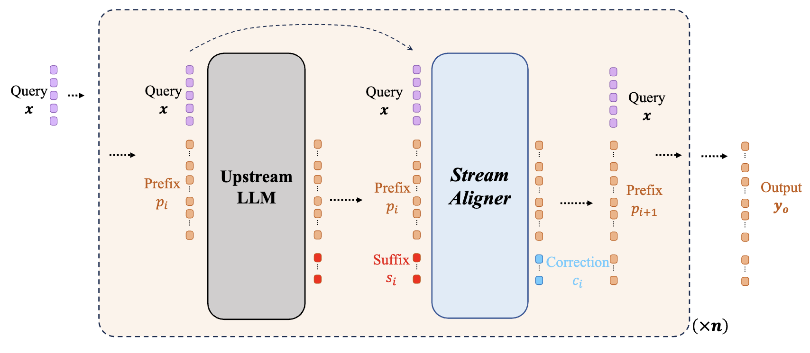

Welcome! I'm using more and more coding agent these days, and gazing at the screen is so boring, so I decided to start a blog. This blog will host occasional thoughts on alignment, interpretability, formal verification, and other research perspectives. Expect a mix of high-level perspectives and practical explorations, or just random thoughts.
What to Expect
Well, I'm not submitting these stuff to any conferences, so there would be simply no format
Topics
- AI alignment thoughts and reading summaries
- Mechanistic interpretability notes
- Project updates and open problems
Thanks for stopping by — more soon.